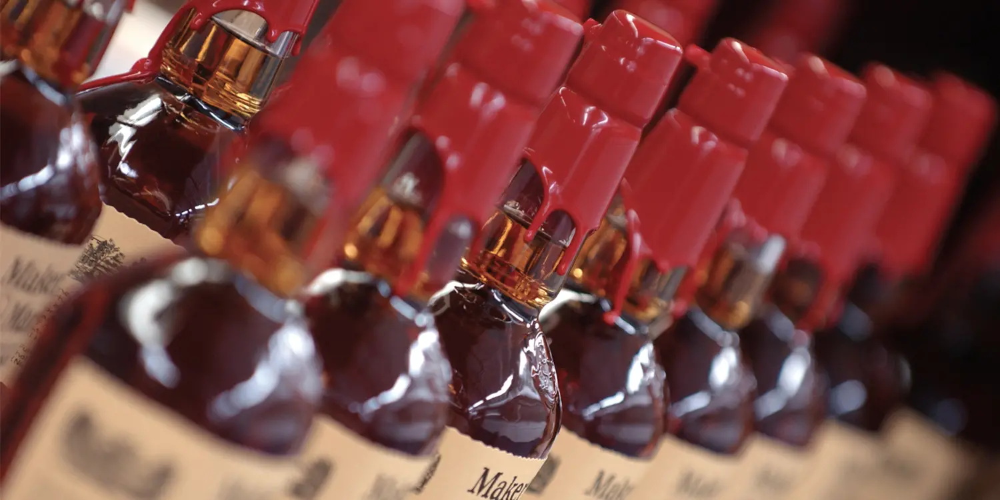

Venden el whiskey más caro de la historia

El "Santo Grial" de los whiskies batió el récord de la botella más cara jamás vendida, llegando a casi 1.5
millones de libras (equivalente a 1.9 millones de dólares, 17 millones de euros) en una subasta en Londres,
Inglaterra.
Destilado hace más de 90 años y envejecido en roble europeo durante 60 años, es una de las 40 botellas que
Macallan, con sede en Moray, norte de Escocia, confirmó haber embotellado de la barrica 263 en 1986.
"Esta es la más icónica de todas las botellas de whisky escocés, la pieza central esencial de cualquier gran
colección", señaló la casa de susbastas Sotheby, encargada de organizar la venta.
"Esta botella proporciona la última oportunidad de probar el 'Santo Grial' de todos los whiskies, una
experiencia única en la vida", añadió la empresa.
Pero el lujo y la carestía de Macallan no se limitan a esta botella, pues también tiene la colección de
whiskies más cara del mundo, que inició a formarse en 2005, con una edición especial y limitada a 470 unidades
de un whisky de malta simple, el 50 Years Old Macallan.
La colección se repartió en seis entregas, cada una más añejada y con una botella de diseño único. Una
colección de 391 lotes se vendió en 10 millones de dólares.
La historia de Maker’s Mark

A principios de los años 40, Bill Samuels Sr, sexta generación de destiladores, vendió la destilería
de su padre, T.W. Samuels. Bill decidió entonces desvincularse de la producción de whisky, hasta que
su mujer, Marge Samuels, se dio cuenta de que él no podía vivir sin crear whisky.Marge decidió
empujarlo a crear su propio whisky, poniendo dos condiciones: realizar un whisky más suave del que
producía T.W. Samuels y dejar que ella se encargara del diseño de la botella. En aquella época todas
las botellas de whisky en Estados Unidos eran similares. Medían de 30 a 40 centímetros, con una
forma alargada y una etiqueta fina, y Marge quería diferenciar su whisky de los demás.Fue Marge
también la que dio nombre a la marca, ya que, como coleccionista de estaño fino, siempre buscaba la
marca del fabricante (en inglés, “maker’s mark”), y le pareció el nombre más adecuado para este
whisky.Finalmente, en Enero de 2014, Beam y, con ella, Maker’s Mark, pasaron a manos del gigante
japonés Suntory. Sin embargo, desde la destilería siguen manteniendo el mismo sabor del whisky y las
mismas características de producción.
Dalwhinnie, la destilería más fría de Escocia

Dalwhinnie es una de las marcas de Single Malt más vendidas de Diageo (la cuarta después de Cardhu,
Talisker y Lagavulin). La destilería se encuentra junto al río Tromie, uno de los múltiples
afluentes del río Spey. Está situada en una de las regiones más frías de la Gran Bretaña y su
temperatura media anual es de 6º.La destilería fue comprada en 1905 por la empresa americana Cook &
Bernheimer por sólo 1.250 libras. Fue la primera destilería escocesa comprada por una empresa
extranjera, lo que levantó bastantes temores. Según se cuenta, los nuevos propietarios ondearon con
orgullo la bandera de Estados Unidos en la destilería, donde mezclaban «whisky escocés para
adaptarse al paladar estadounidense«.
Después de la aprobación de la Ley Seca en 1920, la destilería fue vendida a Macdonald Greenlees &
Williams Ltd, dirigida por Sir James Calder (quién también destiló Old Parr). Sin embargo en 1926 la
importante Distillers Company Ltd la compró.Hoy en día acuden anualmente más de 20.000 visitantes a
la destilería y sus ventas están cerca del millón de unidades. En 2011 vendió un 15% más que el año
anterior y ya cuentan con 5 referencias de Single Malt distintas (20, 25, 29, 36 años y la edición
«Manager’s Choice» de 1992). Finalmente debemos añadir que el espirituoso destilado en Dalwhinnie es
una parte importante del whisky Buchanan’s (muy popular en Sudamérica).